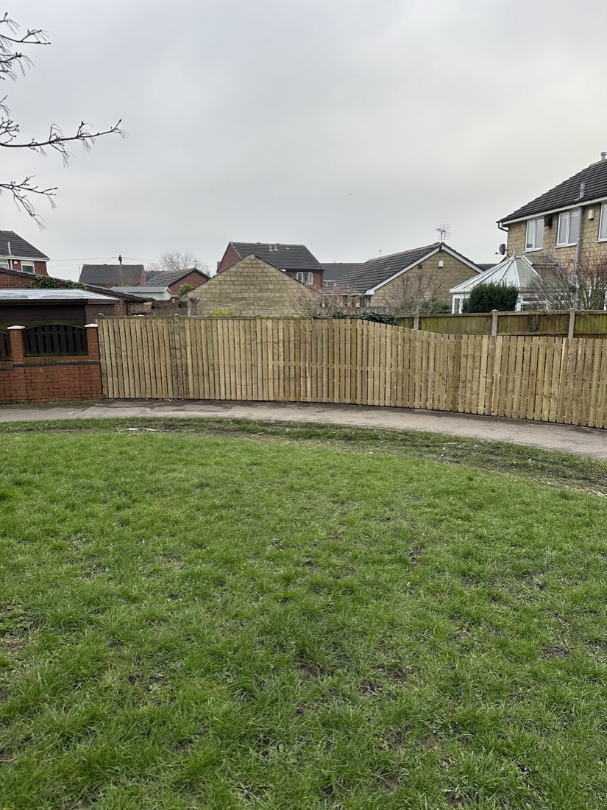
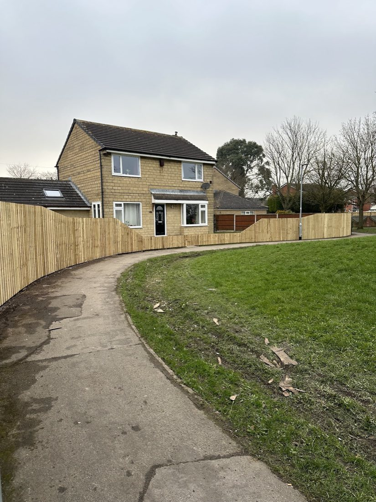
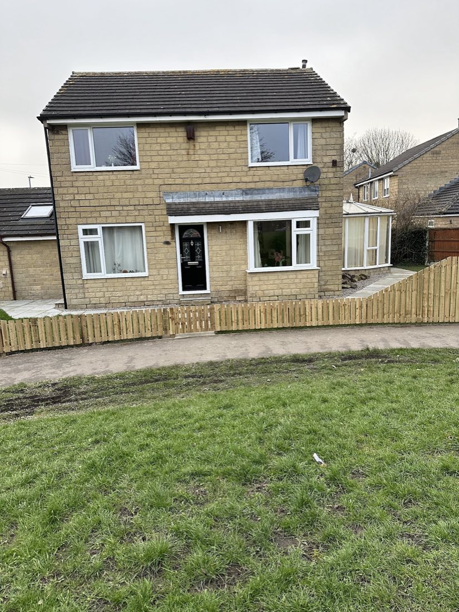
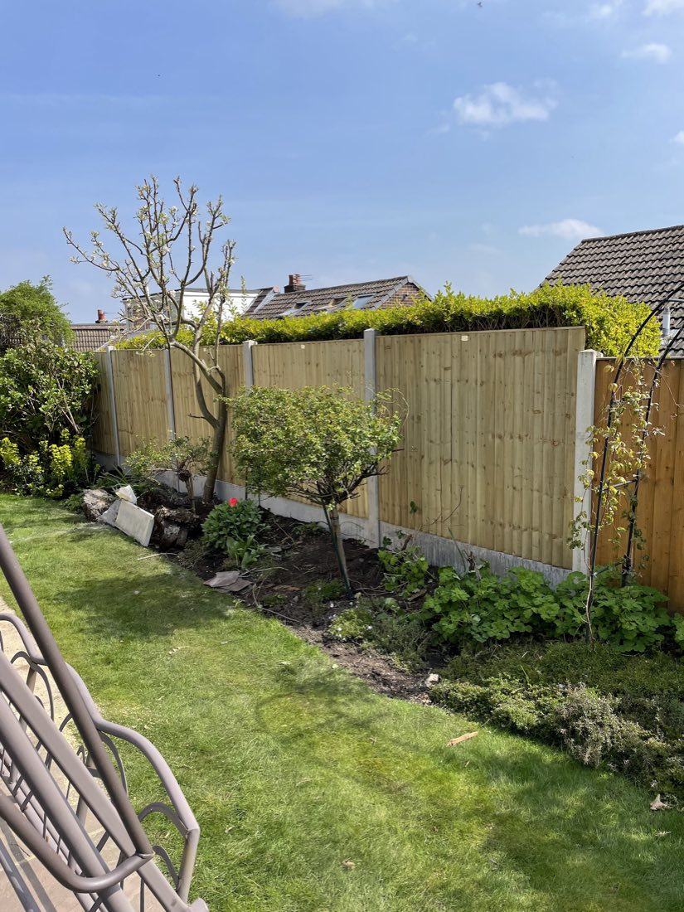
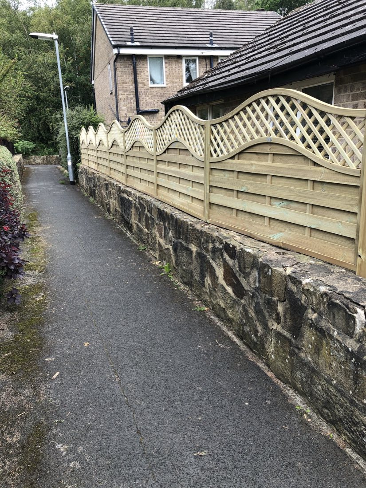
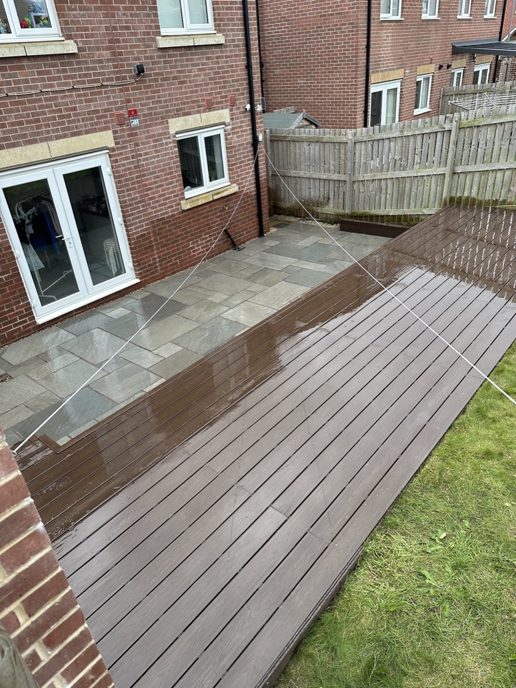
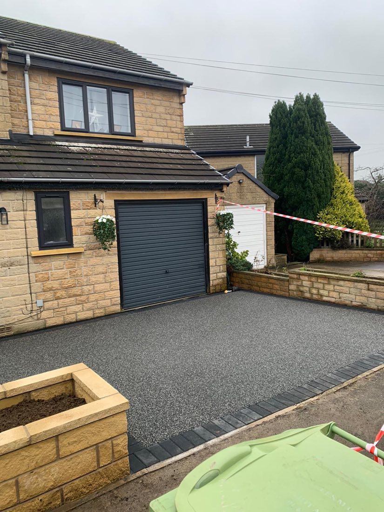
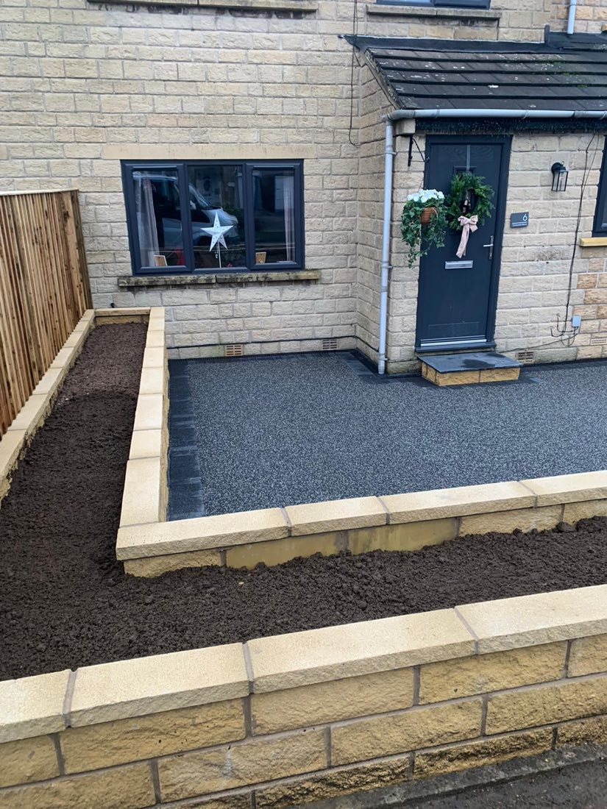

Leeds • Tree Surgery & Landscaping
Tree Work & Landscaping Done the Way You Actually Asked For — Not Upsold
I'm Sonny — Green Acre has been doing tree surgery and landscaping across Leeds since 2012. I listen to what you actually want for your garden, rather than pushing a bigger project than you asked for.
- 9.9 / 10From 36 Checkatrade reviews
- Since 2012Trading continuously in Leeds
- Free QuotesNo obligation, no pressure

What I Do
Tree Surgery & Hard Landscaping
Tree Surgery
Pruning, trimming, crown reductions and complete removals — including overgrown conifers and Leylandii.
Block Paving & Patios
Block paving, patios, flagging in Indian stone, and full driveway restorations.
Low-Maintenance Gardens
Fencing, walls, artificial grass, turf and jet washing — gardens that stay tidy with less work.
About Sonny
Family Run in Leeds Since 2012
Sonny has been running Green Acre for over a decade, covering tree surgery and hard landscaping across Leeds with a small, dependable team. No subcontractors passed around — you deal with Sonny throughout.
What comes up again and again in reviews: he listens to what you actually want, rather than steering every job toward a bigger, more expensive project.
"Sonny was the only tradesperson that actually listened to what was wanted from the garden, and found a way to make it work — rather than trying to upsell a grand design project."
Recent Work
Real Jobs From the Checkatrade Gallery














In Their Own Words
What Customers Say — Checkatrade
Resin flooring installed in back garden
"From the beginning, Sonny's communication was excellent — he listened to and clearly explained everything. Punctuality and reliability were excellent and the work was of the highest standard. His team worked tirelessly, even through some crazily hot weather. We returned to a job completed to the highest standard — and with children and a dog, everything was safe and tidy the whole time."
Decking, child-proofing & levelling
"I had a lot of quotes for this job. Sonny was the only tradesperson that actually listened to what I wanted from my garden and found a way to make it work — no trying to upsell a grand design. The team turned up on time, problem-solved on the spot and always left the garden immaculate, respectful of my home and my three disabled children. Finished ahead of schedule and it's fantastic."
Reducing overgrown conifers
"Excellent service from initial quote to completed job. Green Acre came out, gave a fair price and arrived on time. They talked through options for reducing some conifers that had got badly out of control, fit me in quickly and rearranged promptly when bad weather hit. Good communication throughout, a very thorough job and cleared away too."
Complete garden transformation
"Incredibly happy with our garden and the work carried out by Green Acre. Very hard working, made sure everything was left tidy every day. The final result is completely transformed — we're so pleased. Couldn't recommend enough."
New fencing & gravel path
"Green Acre landscaped my garden, erected a fence and laid a gravel path to a very high standard. The three lads were very professional, polite and hard working. I'll use them in the future without any hesitation."
Laying a base for a log cabin
"Sonny immediately reached out with professionalism. Despite the short notice he promptly came to assess the job and even adjusted his schedule to accommodate us. His team ensured the workspace was spotless and delivered excellent work."
Get In Touch
Ready For a Free, No-Obligation Quote?
No public phone or email is listed for Green Acre, so the fastest real way to reach Sonny is through one of his existing, verified profiles below.
Built as a free, ready-to-launch sample for Green Acre — it can go live on your own domain, with your branding and any changes you'd like, whenever you're ready.